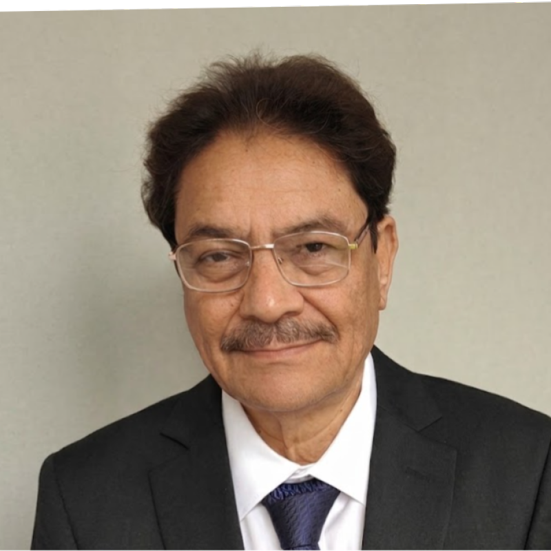

Cyber-Physical Platform for Industry 4.0 Implementation
In the age of IoT and Big Data, Digital Twins have become the defining technology of intelligent industry — creating live virtual mirrors of physical assets that predict failures before they occur, optimise processes in real time, and transform raw sensor streams into actionable intelligence. From factory floors and railway networks to power grids, smart cities, and community health systems, Digital Twins are rewriting what is possible. IndusTANTRA builds these platforms — indigenously, with deep academic rigour, for India and the world.
Click any platform to explore its capabilities in detail.
Flagship · Integrated Platform
Unified orchestration layer integrating all digital twin modules into one operations intelligence platform.
Explore →Rotating Machinery · VibLab IITK
Vibration-based fault classification for rotor-bearing systems using STFT, CNN, and t-SNE. 93–100% accuracy.
Explore →Turbofan Engine Prognostics
Physics-informed Health Index for gas turbine engines. NASA C-MAPSS validated. No run-to-failure labels needed.
Explore →Power Generation Assets
FFT-based condition monitoring for turbines and generators. Migrates legacy LabVIEW PoP Monitor to Python.
Explore →DAQ · Dashboard · HMI
Shopfloor data acquisition from CNC, robots, and manual work centres — live dashboard with RFID tracking.
Explore →Shopfloor Digital Twin
Discrete-event simulation with priority dispatching and Gantt chart generation. Reduced MCF lead time by 10 days.
Explore →Smart City · Urban Twin
City-scale digital twin for traffic, mobility, and urban infrastructure — live congestion mapping with event scenario modelling.
Explore →SCADA · Power Infrastructure
Non-intrusive ML overlay on existing SCADA systems — anomaly detection, RUL prediction, digital twin bridging.
Explore →Social Impact · Public Health
AI analytics platform for health camp data — 18+ biomarker risk scores, individual + population PDF reports.
Explore →Social Impact · Clinical AI
AI-powered clinical decision support — symptom analysis, differential diagnosis, and triage intelligence for healthcare providers.
Explore →OT · IT Integration
Indigenous platform bridging shopfloor controllers with enterprise analytics — Modbus, OPC-UA, MQTT, RFID.
Explore →Flagship implementations and sponsored research across Indian industry and government.
Pilot-scale implementation of an integrated Industry 4.0 platform at Modern Coach Factory (MCF), Raebareli — India's most modern coach manufacturing facility. Three interconnected pillars: shopfloor monitoring, production scheduling, and RFID-based material tracking. Priority-based scheduling reduced completion time for highest-priority coach variants by up to 10 days vs random dispatching. Bottleneck analysis identified key stations at ~86–88% utilisation.
Design and implementation of a five-layer open-source digital twinning framework for Indian Railways, developed in collaboration with CRIS (Centre for Railway Information Systems). The Waltair (WAT) Division — serving Visakhapatnam Port, RINL steel, and petroleum freight — was selected as pilot. Framework spans data acquisition, model layer, analytics, and a cloud dashboard for remote monitoring. Presented at RAIL 26, Budapest.
Design and development of instrumentation system for wheel-flat detection — RDSO, 2001. Pioneering on-track load measurement system for Indian Railways.
Details →Consortium project with IIT Bombay, TATA Motors, M&M, Ashok Leyland, TCS, Pricol — development of ABS, TCS and ESC for automobiles. Supported by CAR–TIFAC, DST.
Design, development and launch of a MEMS-based micro-satellite. Project Coordinator under ISRO support. Successfully launched 2011.
Details →Instrumentation systems for health monitoring of critical rotating machines for electric power generation. Joint project with CSIO Chandigarh, BHEL and NTPC. DST funded, 1996–2001.
Software development for life estimation of turbine blades, and development of new techniques for determination of damping in rotors. Aeronautical Research & Development Board, MoD, 1992–2000.
Board for Smart Materials Research and Technology; National Programme on Micro and Smart Systems. National coordinator and project leader.

Professor Emeritus, Department of Mechanical Engineering, IIT Kanpur
Former Chairman, Technology Mission for Indian Railways (TMIR), Govt. of India
Prof. Vyas holds a Ph.D. (1986), M.Tech. (1983) and B.Tech. (1980) — all in Mechanical Engineering — from IIT Delhi and IIT Bombay, and has been a faculty member at IIT Kanpur since 1987. His research spans Machine Dynamics, Nonlinear Parameter Estimation, Instrumentation, and AI/ML applications for Smart Infrastructure and Industry 4.0.
As Chairman of TMIR (till April 2022), he spearheaded the digital modernisation of one of the world's largest railway networks, including Industry 4.0 protocols at MCF Raebareli, on-board diagnostics for rolling stock, and deep learning for rail asset management.
He has held leadership roles including Head of Mechanical Engineering, Nuclear Engineering, and Centre for Mechatronics at IIT Kanpur; Vice Chancellor of Rajasthan Technical University (2013–15); and Visiting Professor at Virginia Tech, INSA Lyon, Lulea University, and National Chung Cheng University. He is a Founding Director of the International Society on Asset Management, Australia.
Integration, Monitoring and Analytics of Large Systems & Processes